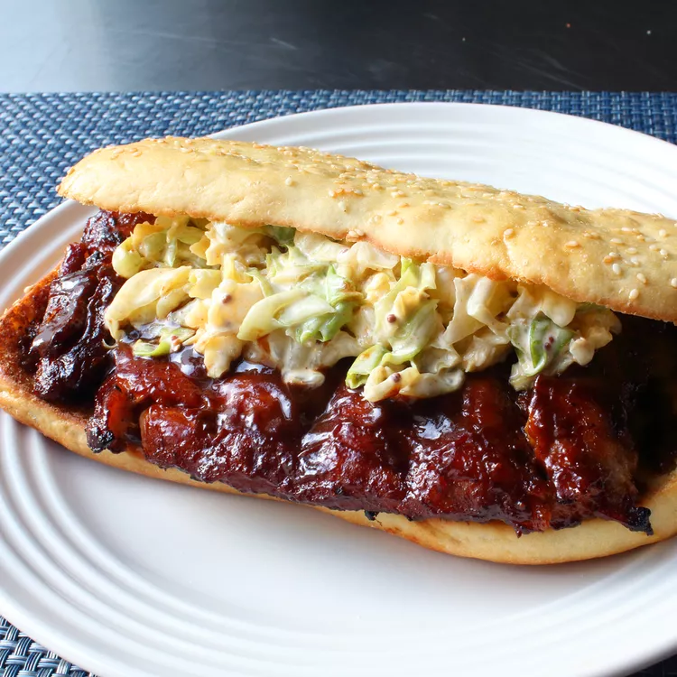

Home
Copycat of McRib
A recipe taken from AllRecipes which is a copycat of a Mcdonald's McRib.
Ingredients
Dry Rub:
- ⅓ cup kosher salt
- ¼ cup brown sugar
- tablespoons chili powder
- 2 tablespoons freshly ground black pepper
- 1 tablespoon ground cumin
Sandwiches:
- 2 racks baby back pork ribs
- 1 cup barbecue sauce, divided
- 4 sesame hamburger rolls, split and toasted
- 1 cup coleslaw
Directions
- Preheat the oven to 325 degrees F (165 degrees C).
- Mix salt, brown sugar, chili powder, pepper, cumin, and cayenne together for the rub.
- Place ribs on a foil-lined baking sheet. Season both sides generously with some of the rub. Reserve remaining rub for another use.
Cover top with parchment paper and wrap foil over the edges. Cover the whole baking sheet with another large sheet of foil, sealing in the sides.
- Bake in the preheated oven until tender, about 2 hours and 45 minutes.
- Unwrap ribs and let cool briefly until safe to handle. Pull out the bones, stuffing any loose pieces of meat back into the holes and checking carefully for bone fragments.
Wrap ribs back up and refrigerate until cold, 8 hours to overnight.
- Cut each rack in half. Brush both sides generously with barbecue sauce.
- Preheat a charcoal grill for high heat and lightly oil the grate.
- Grill ribs until heated through, 3 to 4 minutes per side. Remove from grill and brush with more barbecue sauce.
- Drizzle more barbecue sauce onto each roll. Sandwich each rib section between a roll and top with coleslaw.
